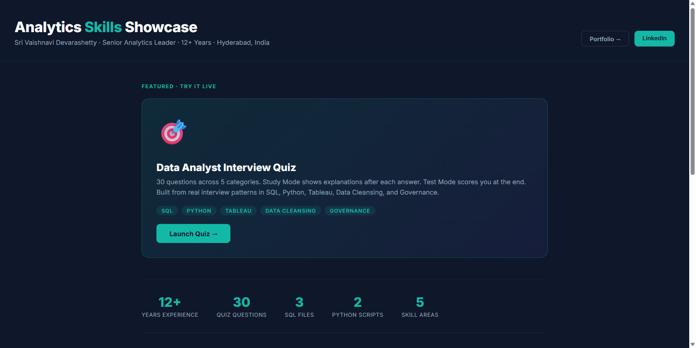

12+ years translating complex business questions into measurable analytics outcomes — now with AI as a co-analyst.
Core Stack
End-to-end analytics capability — from raw SQL to executive dashboards, with AI woven through every layer.
Career
Progressive analytics leadership across global enterprises — from engineering foundations to managing AI-augmented analytics teams.
Featured Work
Live analytics projects — SQL, Python, Tableau, Governance, and an interactive interview quiz.

A full interactive showcase of SQL (Snowflake window functions, CTEs, optimisation), Python data pipelines, Tableau LOD expressions, data governance checklists, and AI-augmented analytics workflow — all built from real work at Apple and NVIDIA.
An AI-assisted quality checklist that reviews Tableau dashboards for broken calculations, missing joins, inconsistent KPI definitions, and governance gaps — before dashboards reach stakeholders. Built from real production QA experience at Apple and NVIDIA.
How I Work
"I use AI as a co-analyst, not a shortcut. Every AI output — every number, query, and stakeholder message — gets a human review step before it reaches production."
Scaffolds complex Snowflake queries — window functions, CTEs, performance-tuned aggregations — which I validate before running.
Suggests Tableau LOD expressions and calculated field logic when working through tricky aggregations or governance edge cases.
Translates analyst-language KPI changes into executive-ready briefs — I edit and approve every word before delivery.
Enables business stakeholders to query data directly, reducing ad-hoc SQL requests to the analytics team.
Automated checklist reviews dashboards for broken joins, missing calculations, and inconsistent KPI definitions pre-publication.
First-draft data dictionary entries and governance documentation — reviewed and corrected before going into the catalog.
Open to Analytics Manager, Senior Analytics Lead, and AI-Augmented Data Analyst roles. Based in Hyderabad — open to remote and hybrid across India.